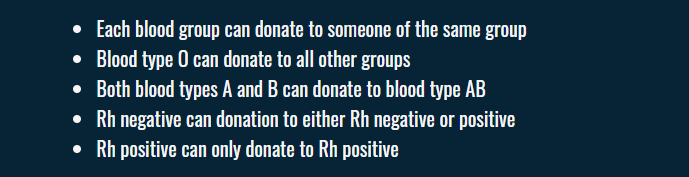
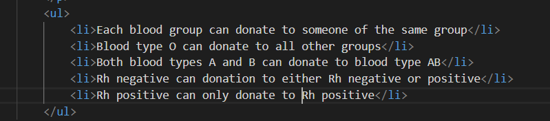
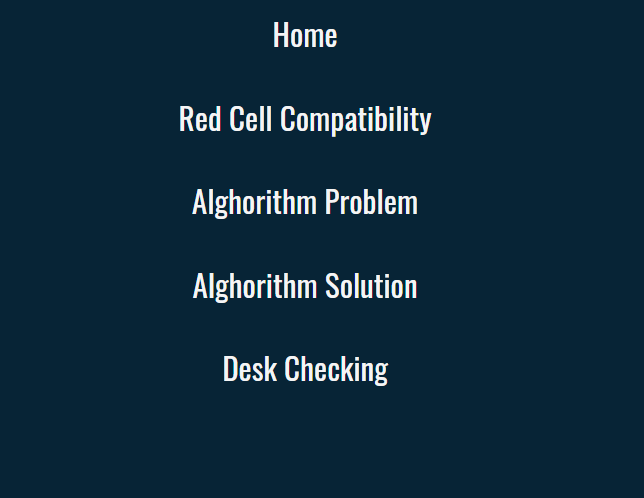
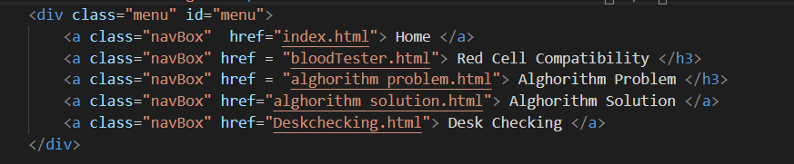
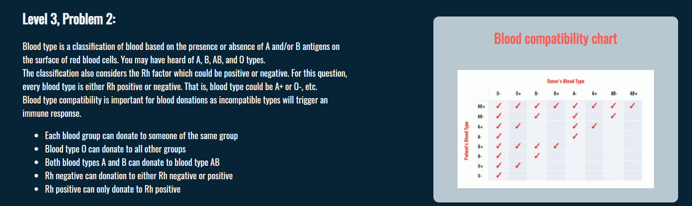
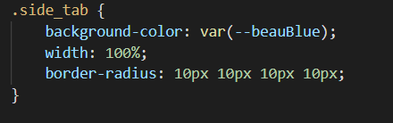
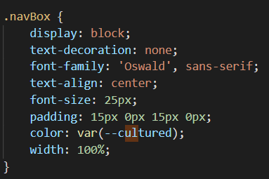

Peter Jung - Web Development Showcase
In my website, I have incorporated numerous features to make it more accessible and understandable to the user. This is through the implementations of features made possible by HTML and CSS. My website uses the HTML list function, to neatly organize and present numerous ideas. The usage of unorganized lists allows the reader to perceive numerous arguments while understanding that the order of the elements does not matter. For example, in my “Problem” page, I use a list to identify the different rules the blood types must follow, as shown by below. This list is created by creating an unordered list (ul) and then creating a list item (li) for each item desired in the list. In this example, the list function is used to organize and present numerous rules that blood donations must follow.
 Furthermore, the website uses the “div” feature offered in HTML, to organize and separate the web page. This allows the page to be more readable, along with allowing other scripts such as CSS and Javascript, to target and modify specific sections of the web page. For example, the menu system in my website uses a “div” to allow the Javascript to specifically target it, allowing for effects such as where when the menu is opened, the main page disappears and the menu appears.
 In addition, the website uses features offered by CSS such as background colours for different elements, to separate specific elements and highlight them from other elements. This makes the web page more readable and draws the viewers attention to certain parts of the page. For instance, I use background colours for the blood tab div, to draw the attention of the viewer and allow for that element to be separated from the other parts of the page, such as the text on the left and the table.
 Finally, the web page uses “font-family” through CSS to illustrate a specific theme and aesthetic. This is achieved through how different fonts portray and illustrate different tones and moods. The font I use in my website is called "Oswald" and aims to carry a more simplistic but futuristic theme, which compliments the simple and smooth colour palette which my web page uses.
